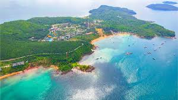
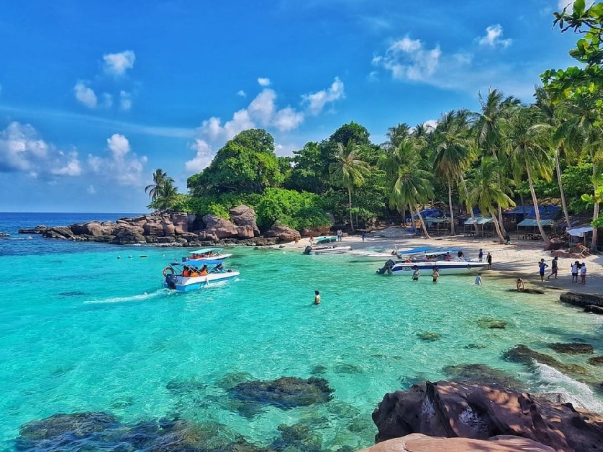
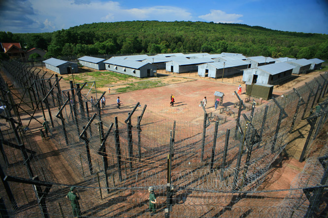
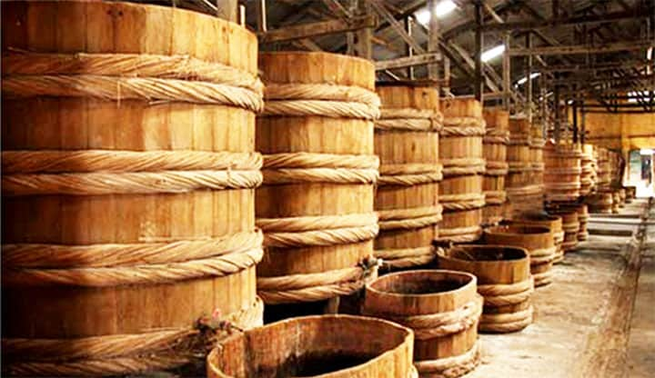

Phú Quốc - hòn đảo ngọc của Việt Nam với những bãi biển cát trắng trải dài, làn nước trong xanh và hệ sinh thái rừng nhiệt đới phong phú. Dưới đây là lịch trình chi tiết 4 ngày 3 đêm giúp bạn khám phá trọn vẹn vẻ đẹp của đảo ngọc.
Ngày 1: Khám phá Bãi Dài - Thiên đường biển đảo
Sáng: Đón chuyến bay sớm đến sân bay Phú Quốc, nhận phòng khách sạn nghỉ ngơi.
Trưa: Thưởng thức hải sản tươi sống tại nhà hàng ven biển.
Chiều: Thư giãn tại Bãi Dài - một trong những bãi biển đẹp nhất thế giới. Tham gia các hoạt động như lặn ngắm san hô, chèo thuyền kayak.
Tối: Dạo chợ đêm Phú Quốc, thưởng thức ẩm thực đường phố và mua sắm đặc sản địa phương.
Ngày 2: Tour đảo phía Nam - Khám phá thiên nhiên hoang sơ
Sáng: Xuất phát tour đảo phía Nam, tham quan Hòn Móng Tay với làn nước trong vắt và bãi cát trắng mịn.
Trưa: Ăn trưa trên tàu với các món hải sản tươi ngon vừa đánh bắt.
Chiều: Ghé thăm Hòn Gầm Ghì để lặn ngắm san hô và các loài cá nhiều màu sắc. Tiếp tục đến Hòn Mây Rút nơi có bãi biển hoang sơ tuyệt đẹp.
Tối: Thư giãn tại resort, tận hưởng dịch vụ spa với tinh dầu tràm trà đặc trưng của Phú Quốc.
Ngày 3: Miền Bắc đảo - Văn hóa và lịch sử
Sáng: Tham quan di tích lịch sử Nhà tù Phú Quốc - chứng tích chiến tranh quan trọng.
Trưa: Dừng chân tại làng chài Rạch Vẹm, thưởng thức các món ăn đặc sản được chế biến từ hải sản tươi sống.
Chiều: Khám phá Vườn quốc gia Phú Quốc với hệ động thực vật phong phú. Tham quan suối Tranh - điểm đến lý tưởng để tắm mát.
Tối: Tham gia chương trình câu mực đêm cùng ngư dân địa phương, trải nghiệm thú vị không thể bỏ qua.
Ngày 4: Mua sắm đặc sản và trở về
Sáng: Tham quan làng nghề nước mắm Phú Quốc nổi tiếng, tìm hiểu quy trình sản xuất truyền thống.
Trưa: Mua sắm đặc sản làm quà như nước mắm, hồ tiêu, rượu sim tại chợ Dương Đông.
Chiều: Trả phòng khách sạn và di chuyển ra sân bay, kết thúc hành trình khám phá Phú Quốc đáng nhớ.
Mẹo du lịch Phú Quốc:
- Thời điểm lý tưởng: Từ tháng 11 đến tháng 4 năm sau, trời ít mưa, biển lặng.
- Di chuyển: Thuê xe máy là cách tiện lợi nhất để khám phá đảo (khoảng 150.000-200.000đ/ngày).
- Ẩm thực: Đừng bỏ qua các món đặc sản như gỏi cá trích, cua huỳnh đế, bún quậy.
- Lưu ý: Mang theo kem chống nắng, mũ rộng vành vì nắng biển khá gắt.
Hy vọng với lịch trình chi tiết này, bạn sẽ có một chuyến đi Phú Quốc trọn vẹn và đáng nhớ. Hòn đảo ngọc chắc chắn sẽ không làm bạn thất vọng với vẻ đẹp tự nhiên và sự đa dạng trong trải nghiệm mà nó mang lại.